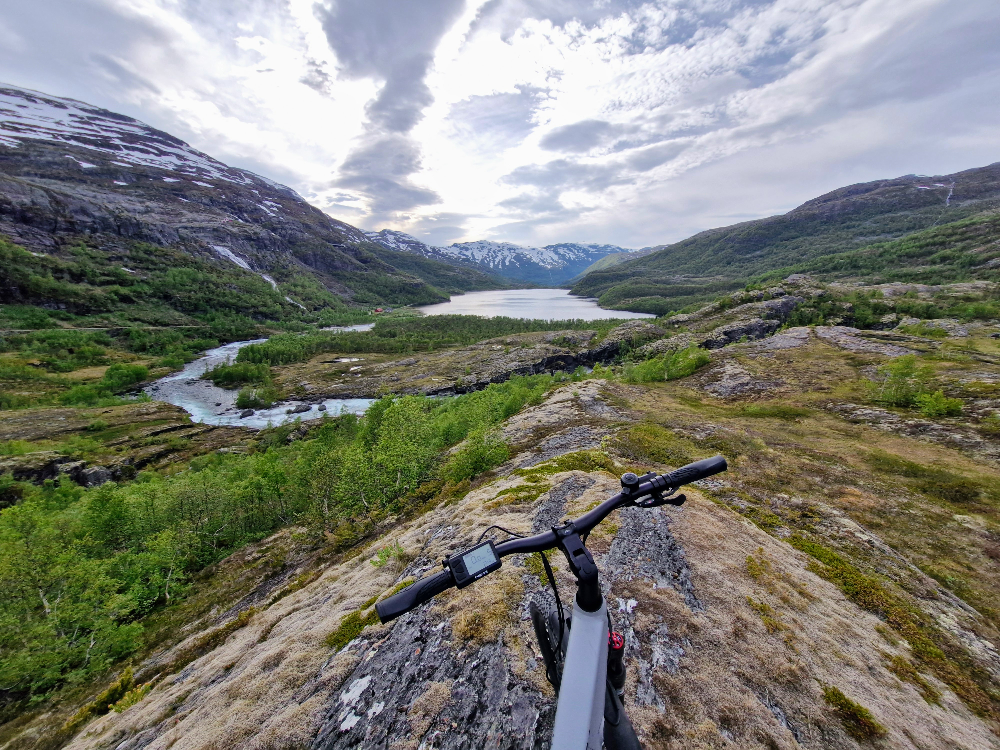
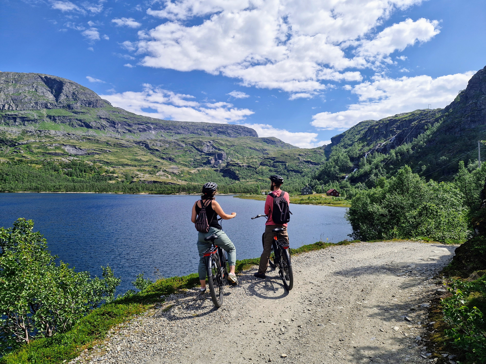
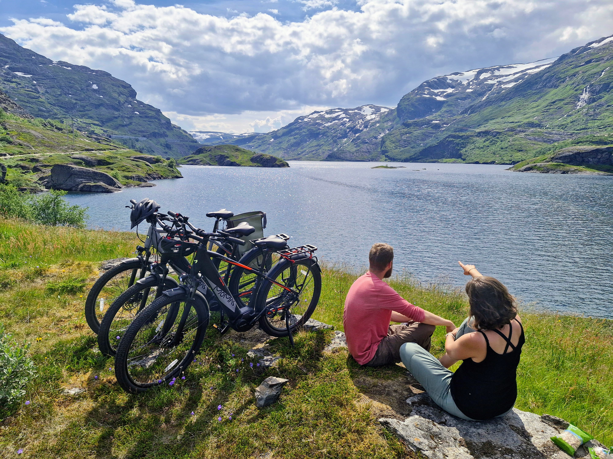

This beautiful guided tour will take you on an adventure, cycling along the famous Rallarvegen. A round trip starting from Vatnahalsen train station.
- Height limit: Above 150cm (only adult bikes available)
- Requirements: Must be confident on a bicycle
- What to bring: Warm/waterproof clothes depending on the weather, (warm drink included)